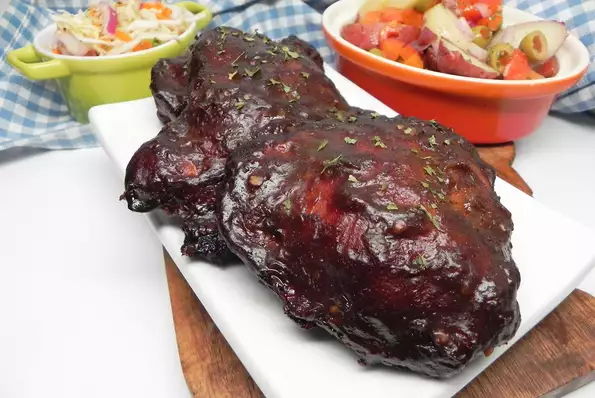

Marinated Boneless, Skinless Smoked Chicken Thighs

Smoky and slightly spicy chicken thighs with a tender and moist interior.
The type of hot honey used will have a big impact on how spicy your thighs
are; the extra-hot honey has a kick to it. The chicken thighs have a thin
smoke ring with a deep mahogany color on the surface of the thighs thanks
to the marinade and smoke. Great on a biscuit with extra-hot honey or on
a buttered and toasted brioche bun.
the ingredientes
- ½ cup soy sauce
- ½ cup dark brown sugar
- cup 1/4 cup hot honey (such as Mike's Hot Honey®)
- 1 large shallot, finely chopped
- 6 cloves garlic, minced
- 1 tablespoon chili powder
- 3 pounds boneless, skinless chicken thighs
- 2 teaspoons cornstarch
- 2 teaspoons water
- 2 teaspoons kosher salt
- 2 teaspoons ground black pepper
directions
- Whisk together soy sauce, brown sugar, hot honey,
shallot, garlic, and chili powder in a medium bowl.
Combine hot honey mixture and chicken thighs in a
gallon-sized resealable plastic bag. Seal bag and
gently massage to work marinade into thighs. Chill
in a refrigerator, at least 2 hours, or up to 8 hours.
- Prepare a smoker according to manufacturer's
instructions, bringing internal temperature to 225
to 250 degrees F (107 to 120 degrees C); maintain
temperature for 15 to 20 minutes. Remove chicken
thighs from marinade, and pat dry with paper towels;
do not discard marinade.
- Stir together cornstarch and water in a small metal bowl until combined.
- Strain marinade through a fine-mesh strainer into a small saucepan;
whisk in cornstarch mixture. Bring marinade mixture to a boil over
medium heat, whisking frequently. Reduce heat to low and cook,
whisking occasionally, until sauce is thickened, about 3 minutes.
Set sauce aside to cool at room temperature.
- Sprinkle chicken thighs evenly with salt and pepper.
- Smoke chicken thighs, maintaining temperature inside smoker,
until a thermometer inserted into the thickest portion registers\
165 degrees F (74 degrees C), about 1 hour 45 minutes to 2 hours,
brushing chicken thighs with reserved sauce every 15 minutes
after the first hour of smoking. Transfer chicken thighs to
a plate or platter and serve immediately.